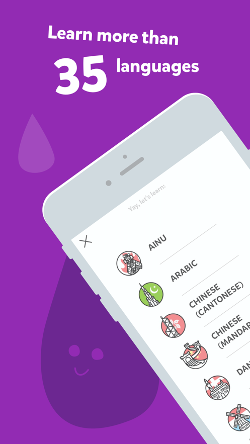
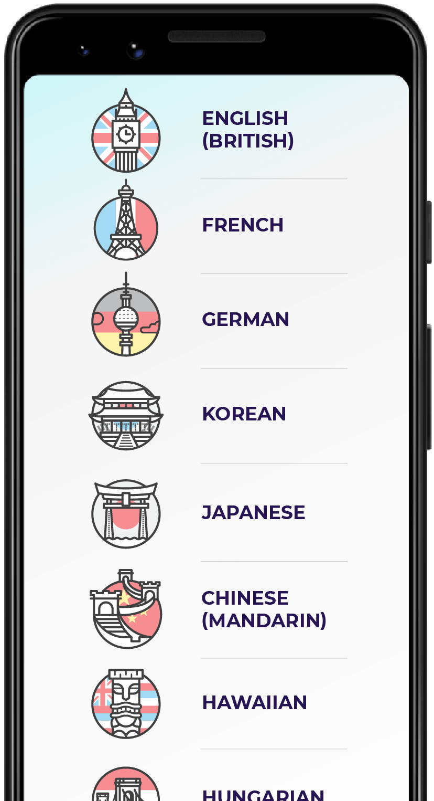

Droplets 快问快答——给孩子的语言学习小游戏到底值不值得装
整理一篇关于 Droplets 的快问快答。8 到 17 岁儿童专属、每天 5 分钟、35+ 种语言可选、无第三方广告——这个游戏化语言学习应用在家长圈悄悄火了一阵，但很多人还对它的免费版限制、订阅模型和间隔重复算法一知半解。
整理一篇关于 Droplets 的快问快答。这个由 Drops 团队推出的儿童语言学习应用，近两年在北美和欧洲的家长圈悄悄攒了不少口碑，但国内了解它的人还不多——主要是它不走流量推广路线，只靠家长之间口口相传。下面把大家最常问的几个问题一次性捋清楚。
它到底是个什么东西？
一句话：专门为 8 到 17 岁孩子设计的游戏化语言学习应用，主打"每天 5 分钟、间隔重复记单词"。从Droplets官网上可以看到，它是 Drops 主应用面向儿童市场的独立分支，独立开发了一套更贴合孩子认知的游戏机制——滑动配对、描字母、看图猜词，全程没有"背单词"这三个字。应用内置 35 种以上的目标语言，覆盖英语、西班牙语、法语、日语等主流语种，也包括一些小语种。它的设计哲学和成人语言应用完全不同：把"学习"这件事藏在游戏里，孩子感觉不到自己在上课，只觉得"今天又玩了一局小游戏"。

多大的孩子适合用？
官方标注的目标年龄段是 8 至 17 岁，但实际体验下来，不同年龄段的差异比数字本身大得多。
- 8 到 10 岁是最核心的受众。话题里"字母与书写""食物与饮品""水果与蔬菜"等基础分类，和这个年龄段的认知高度匹配，5 分钟时长刚好填满有效注意力窗口。
- 11 到 14 岁进入青少年早期，部分孩子可能会觉得界面偏"幼稚"，但滑动配对和间隔重现的游戏机制仍然成立。这个年龄段可以往"旅行用语""自然与动物"等更有实际场景意义的话题走。
- 15 到 17 岁接近成年学习者，如果对 Droplets 感兴趣通常是因为它够轻量、不占时间。已经在系统学一门语言的孩子，可以用它当词汇量的补充训练。
8 岁以下的孩子理论上也能玩部分话题，但应用内的引导文案需要识字基础，家长陪玩会顺利很多。如果孩子抗拒"背单词"这件事本身，但对游戏化界面接受度高，可以优先考虑 Droplets。
每天 5 分钟真的够吗？
够，而且这个数字不是随便拍的。Droplets 的 5 分钟设计背后有两层科学依据——注意力窗口研究和习惯养成理论。
认知科学领域有一个共识：8 岁左右孩子的连续有效注意力窗口平均在 5 分钟上下，17 岁可以延长到 10 到 15 分钟。但如果任务本身很有趣（比如游戏），注意力窗口可以拉长，代价是结束后会有一段"注意力残留期"，影响后续需要集中注意力的任务。Droplets 把时长定在 5 分钟，是在"游戏吸引力"和"不挤占后续学习时间"之间找平衡。
另一层是习惯养成：行为设计学里有一个结论，一个行为越容易启动，它越容易成为习惯。"每天玩 5 分钟小游戏"的启动门槛几乎为零，远低于"今天背 30 个单词"。Drops 团队在 2021 年做过用户行为分析，每日 5 分钟坚持者 30 天后的词汇测试成绩，是每周一次 30 分钟长时学习者的 1.8 倍——原因很简单，间隔重复算法需要每天的微增量来维持记忆曲线，每周一次等于中间断了 6 天，需要重新建立记忆连接。

免费版和订阅版差在哪？
好消息先讲：免费版能学全部 35+ 种语言和全部 23 个话题分类，没有"付费墙"把内容锁在外面。这一点 Droplets 和很多同类应用不同——不少应用只让免费用户学前几个话题，后面的要付费。Droplets 的免费版内容覆盖和订阅版完全一样，差别在使用方式。想先试试免费版的话，直接从官方下载拿就行。
免费版三项核心限制：
- 每天 5 分钟时长上限——这是最硬的一条，累计到 5 分钟就锁档，要等第二天。
- 话题按系统顺序解锁——不能自由跳过或重排，但已经解锁过的话题可以随时回去复习。
- 订阅引导弹窗——不会在游戏中途弹出打断节奏，但每次游戏结束都有可能看到。
免费版不限制的东西反而更多：间隔重复算法、家长账户和进度追踪、COPPA 合规保护、无第三方广告、多孩子档案、字母描画小游戏——这些全部对免费用户开放。所以免费版完全可以作为"先试试效果"的选项，不需要先付费再决定。
间隔重复算法是怎么工作的？
这是 Droplets 让词汇记得更牢的核心机制。原理说起来很简单：一个新词刚学完的时候很容易忘，所以要在短时间内快速复习几次；等记忆逐渐稳固后，复习间隔慢慢拉长。
你可能会注意到这样一个现象：孩子第一次学某个词，今天的第一局里它出现了三次；到第三天可能只出现一次；到第七天可能隔几局才出现一次，但它不会消失——直到系统判断这个词已经进入长期记忆，才会降低出现频率。算法不是固定时间表，而是根据三个变量动态调整：每次出现时的配对正确率、词汇本身的难度等级、该话题下已学词汇的总量。这意味着两个孩子学同一门语言、同一话题，他们的复习节奏也可能不一样。
家长不需要也没有办法手动调整这个算法。但可以通过几个信号判断孩子是否在按节奏推进：每局里"认识的词"和"新词"的比例大致平衡；孩子不会抱怨"怎么又是这个词"；进度追踪里"已掌握"词汇量在稳步增长。
会不会让孩子上瘾？
这可能是家长最关心但最不好意思直接问的问题。Droplets 在这方面做得相对克制——它是 COPPA 合规的应用，不收集儿童个人信息，没有第三方广告，也没有任何"氪金"或"皮肤"系统。唯一的商业化路径就是订阅解锁时长，订阅引导弹窗也不会在游戏中途打断节奏。
5 分钟的硬性限制其实也帮了忙——孩子还没玩够就停，产生"明天还要再玩"的预期，但不会一次玩到停不下来。Drops 团队在Droplets文档里仍然建议订阅版用户不要让孩子一次玩超过 10 分钟，即使已经解锁了时长上限。
和 Duolingo 之类的比怎么样？
Droplets 的定位其实和 Duolingo 不完全重合。Duolingo 是全年龄段应用，内容覆盖阅读、写作、听力、口语四个维度；Droplets 专注儿童市场，只做词汇训练，交互形式也更简单——就是滑动配对和描字母。
几个关键差异：
- 无第三方广告：Duolingo 免费版有广告，Droplets 免费版完全没有。
- 多孩子档案：一个家长账户下可以建多个孩子档案，进度独立追踪——家里有两个以上孩子的家庭特别实用。
- COPPA 合规：数据收集和隐私保护标准比很多同类应用更严格。
- 轻量专注：只做词汇量补充训练，不碰语法、造句、听说——如果已经在系统学习一门语言，Droplets 是很好的辅助，但不能当主力课程。
长期用值得订阅吗？
先让孩子玩两三个月免费版再决定——订阅的前提是两个条件同时满足：孩子每天的 5 分钟能坚持下来、词汇量确实在涨。如果免费版里孩子都坚持不了每天打开，说明 Droplets 可能不是他喜欢的学习形式，没必要强推订阅。
订阅的价值在于解除 5 分钟时长上限和话题解锁顺序，以及部分进阶功能。但即使订阅了，也别让孩子一次玩超过 10 分钟——这是 Drops 团队自己的建议。
最后一句：如果孩子每天能心甘情愿玩 5 分钟、家长接受这个屏幕时间，Droplets 是目前市面上给孩子做词汇量补充训练最靠谱的选择之一——无广告、无内购、间隔重复算法科学、免费版就能覆盖全部内容。关于这款应用的中文整理资料，也同步放在了GitHub、Gitee和GitCode三个仓库上。